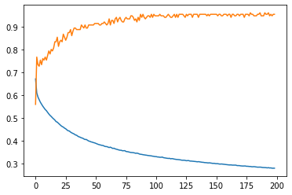
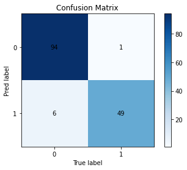

Now aim to predict a specific flower species (label y) from length measurements (data X)
We can use the previous workflow for linear regression with only minor changes – to turn it into a classification tool.
allow for multidimensional features as input (e.g. all 4 length measurements)
make probabilistic predictions y in [0,1]
adjust the cost function
Define the Data
Code
# define dataX = iris.data # What is the shape of X? How many samples?y = (iris.target==2) # What is iris.target? What is this equation ?y = y.astype(int) # binarize y for class of choicenc =1# number of classesinput_shape = (1,) # shape of X - without samplesif (X.ndim >1): input_shape = X.shape[1:]
Inspect Data
Define the Model
Code
# check shapes frequently!print('input_shape: ', input_shape)print('X.shape: ', X.shape)print('y.shape: ', y.shape)print('classes: ', nc)model = tf.keras.Sequential(name='my_log_model')model.add( tf.keras.layers.Dense(nc, input_shape = input_shape, activation ='sigmoid', name='1st_layer'))# define optimizer and lossmodel.compile(optimizer='sgd', loss='binary_crossentropy', metrics=['binary_accuracy'])# see and understand the number of parametersmodel.summary()
Some definitions - known labels: \(y_i \in \{0,1\}\) - predicted labels: \(\hat y_i \in [0,1]\) - accuracy: fraction of true assignments - cross-entropy (per sample \(i\)) \[y_i \log(\hat y_i) + (1 - y_i) \log(1-\hat y_i) \longrightarrow \] Average the above over all samples \(i\)
.
Inspecting the fit
Code
fh = model.fit(X, y, epochs=200, verbose=0)plt.plot(fh.history['loss'][1:])plt.plot(fh.history['binary_accuracy'][1:])plt.show()

Notice: If you run the above code cell repeatedly (without redefining the model), the fit the loss will continue to decrease.
Task (20 min): Evaluations, Predictions and Confusion
Understand the values and the shape of the predictions. Compare them to the observed label (use confusion matrix)
Code
%%script echo edit before executioneval= model.evaluate(...)print('[loss, accuracy] = ', eval)yp = model.predict( ... ) # Inspect and understand the values in yp and compare them to yprint('y.shape: ', y.shape)print('yp.shape: ', yp.shape)print('y[45:55]: ', y[45:55])print('yp[45:55]: ', yp[45:55])
Run the code below and inspect the confusion matrix
Code
%%script echo Ensure yp is defined before executionfrom sklearn.metrics import confusion_matrix# my plot function for cmdef plot_cm(mat): classes = np.arange(cm.shape[0]) plt.imshow(mat, cmap=plt.cm.Blues)for (j,i),label in np.ndenumerate(mat): plt.text(i,j,np.round(label,2),ha='center',va='center') plt.colorbar() plt.title('Confusion Matrix') plt.xlabel('True label') plt.ylabel('Pred label') plt.xticks(classes) plt.yticks(classes) plt.show()cm = confusion_matrix(yp>=0.5, y)plot_cm(cm)

Group Task (30 min): Repeat
Change the code above to fit a model and predict another species. Track the fit performance (model loss) and report the final confusion analysis.
# define dataX = iris.data # What is the shape of X? How many samples?y = iris.target # What is iris.target? What is this equation ?nc =3# number of classesinput_shape = (1,) # shape of X - without samplesif (X.ndim >1): input_shape = X.shape[1:]
Preliminaries
The following will be almost identical to logistic regression (predicting one class label) with only small changes
Softmax: \(z \to \hat y\)
The softmax operation transforms a score vector (z) into a vector of probabilities (\(\hat y\)):
\[\hat y_l = \frac{\exp(z_l)}{\sum_k \exp(z_k)}\]
Elements of \(z\) are real number (with any sign), but this definition ensures that \(\hat y_l \ge 0\) and \(\sum_l \hat y_l = 1\)
Cross-Entropy Loss
For a given sample, we have the known annotations \(y\) and the probabilistic predictions (\(\hat y)\) from the model.
For \(k\) categories both vectors a \(k\)-dimensional. You may think of the true label \(y\) as “one-hot encoded” For example:
\[y = (0,0,1,0,0,0)\]
Where the \(1\) denotes the true class label: the third out of six in this example.
The loss for a given sample is defined as
\[l(y, \hat y)= - \sum_l^k y_l \log \hat y_l\]
Notice that this sum is non-zero only for a single term from the correct class (where \(y_l=1\)). Moreover, if the model prediction \(\hat y_l\) was certain for that class and that specific sample, then \(l((y, \hat y) = -\log(\hat y_l) = 0\). In general the loss will be larger than 0.
The total loss will be the average over all samples losses.
Model
Code
print('input_shape: ', input_shape)print('X.shape: ', X.shape)print('y.shape: ', y.shape)print('classes: ', nc)# keras has many predefined loss functions and metricsloss_name='sparse_categorical_crossentropy'# for integer labelsacc='sparse_categorical_accuracy'# additional metrics to trackmodel = tf.keras.Sequential(name='my_softmax_model')model.add( tf.keras.layers.Dense(nc, input_shape = input_shape, activation ='softmax', name='1st_layer'))# define optimizer and lossmodel.compile(optimizer='sgd', loss=loss_name, metrics=[acc])
Summarize the model and understand the number of parameters
Inspect the fit history and evaluate the model: has it converged?
run a prediction: yp = model.predict(X). Understand the output.
How would you predict the label based on yp
Look at the corresponding confusion matrix
Code
%%script echo Edit before execution# see and understand the number of parameters... show model summary ...fh= model.fit(....)# plot fit history: loss and accuracy...eval= model.evaluate(...)print('[loss, accuracy] = ', eval)yp = model.predict( ... )... inspect yp ...yp1 = ... predict label ...cm = confusion_matrix(yp1, y)plot_cm(cm)
Computational Challenges: Propagation and Backpropagation